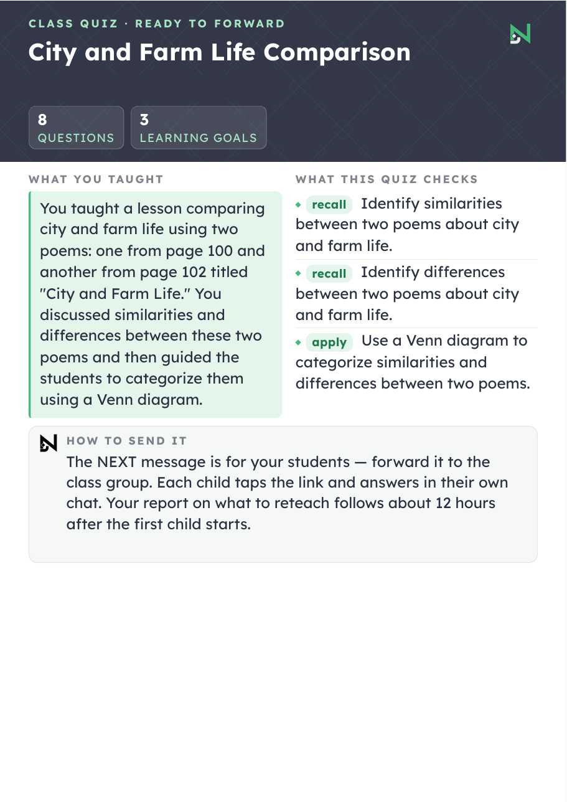
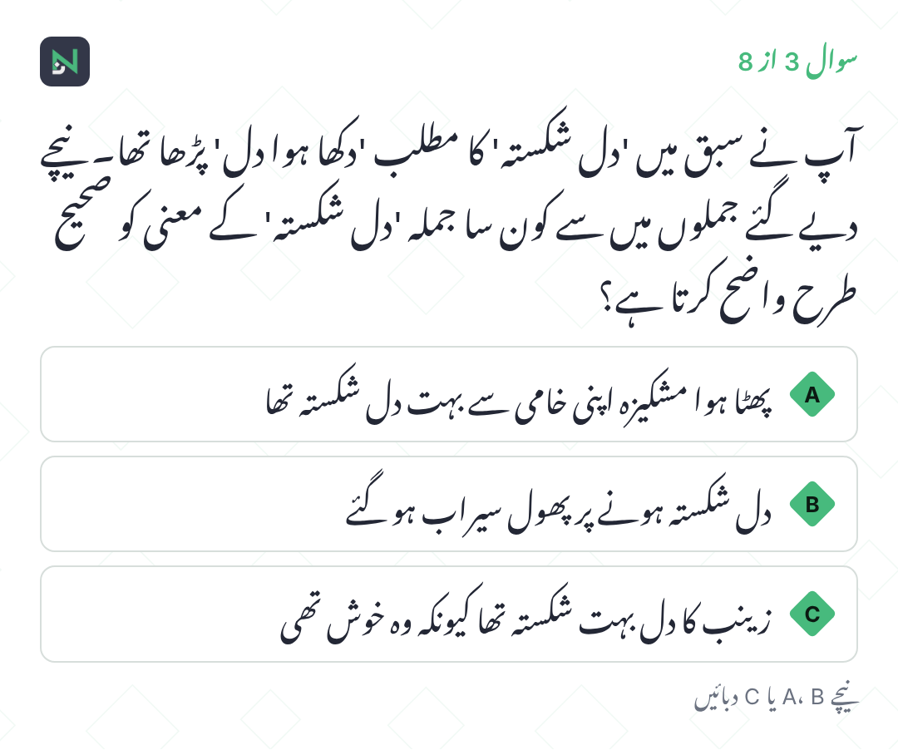
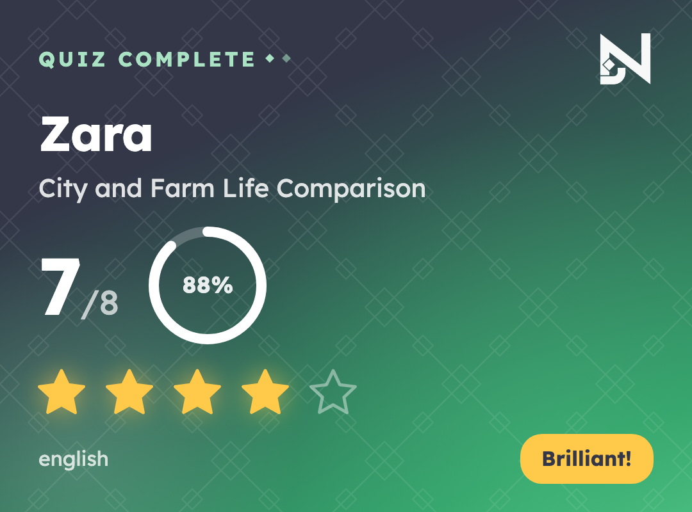
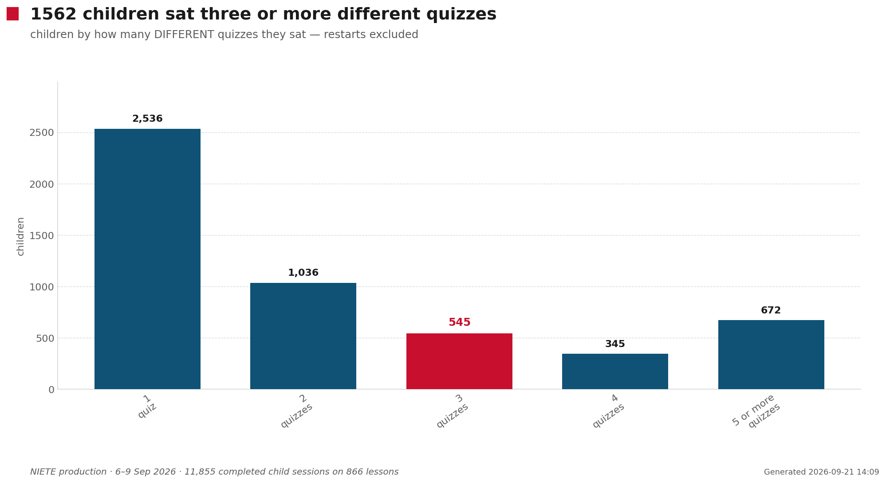
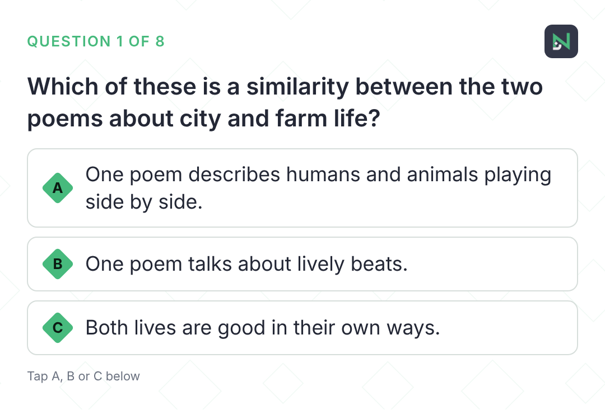
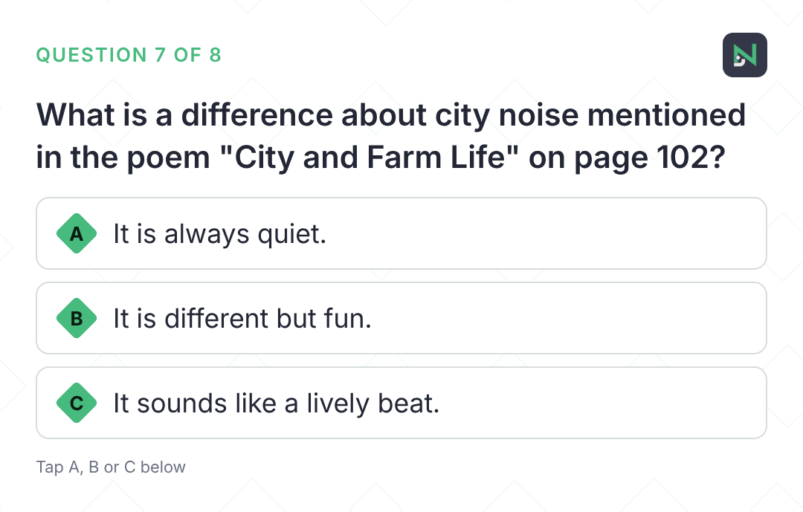
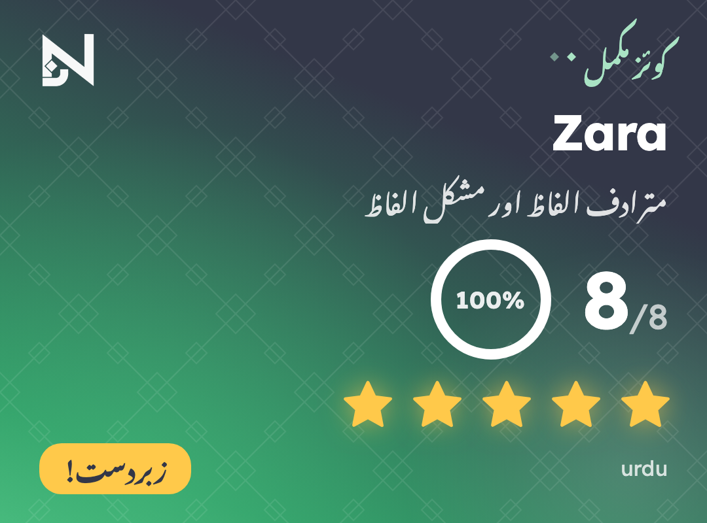
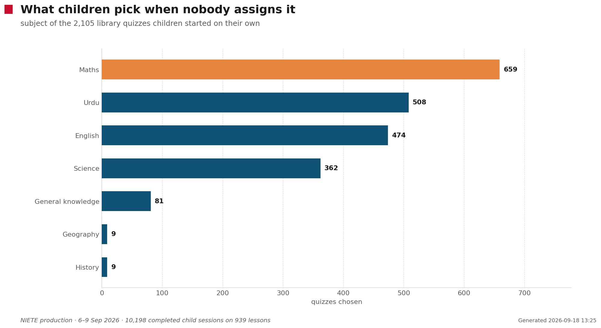
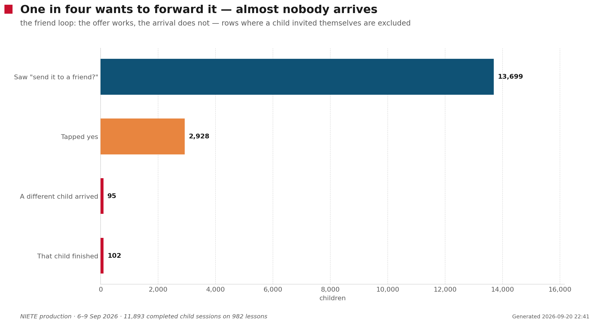

NIETE · Islamabad · live since 6 September 2026
A teacher records a lesson for coaching. The recording is read back, the objectives that lesson actually covered are listed, and eight questions are written about those — not about a syllabus. The teacher forwards one message to the class group; the students answer on WhatsApp; the teacher gets a report on what to reteach. This page is the whole thing: how it works, then what four days of it produced.
536 quizzes sent to teachers278 reached a child 1,904 finished all eight questions1,544 children in all6–9 September 2026
The feature adds one question to a teacher's day and nothing else. Everything below is the production copy and the production artefacts — the strings are lifted from the bot's own catalogue, the objective list, question card, scorecard and PDF are files the system really produced for one Grade 5 English lesson in Islamabad.
Teachers already record a lesson to get coaching feedback. Nothing new is asked of them. The recording is transcribed, and the transcript is read back to list the objectives the lesson actually covered — not what a syllabus says it should have.
That distinction is the whole point. The quiz can only ask about things the children were actually taught, that morning, by that teacher.
The three objectives read out of one real Grade 5 English lesson, with the level each was taught at.
The offer arrives after the coaching report. Two buttons, no form. The first time a teacher ever sees it, a 1:43 film rides along explaining what a quiz is.
A yes takes about a minute to write. The teacher never picks a topic, a difficulty or a question count — all of that comes from the lesson itself.
Your Grade 5 English lesson, City and Farm Life Comparison, Monday. I can make a short 8-question quiz your students take on WhatsApp — it checks what they learnt, and you get a report on what to reteach. Want it? You can make one for any lesson anytime by sending /quiz.
3:41 pmYes, make it
3:42 pm ✓✓Making it now — about a minute. The quiz will arrive here with the message to forward.
3:42 pmThe offer and the acceptance — every word is the production string — and the film that rides the first offer a teacher ever gets. Urdu cut, 1:43.
The first is a three-page PDF for the teacher — what was taught, what each question checks and why, with the correct answers marked. It exists so the teacher can see the quiz before the class does.
The second is written for children, in the quiz language, and carries the class link. The teacher forwards it to the class WhatsApp group. No child’s number is ever needed, and none is ever stored.
📝 Your quiz: Grade 5 English, City and Farm Life Comparison — 8 questions. This PDF is for you: what you taught, what the quiz checks, and every question with its correct answer marked. The NEXT message is for your students — forward it to the class group.
3:43 pmForward THIS message to your students:
3:43 pm📚 *Quiz time!* Your teacher has sent you a quiz on *City and Farm Life Comparison* — what we studied on Monday. Tap here to start: niete.rumi.link/q/H7JXLK It takes about 5 minutes. You will be asked your name and class first.
3:43 pmThe handoff. The link shown here is a stand-in; a real one is a six-character class code.
Not a summary of the quiz — the quiz itself, with the reasoning. Teachers who have this before the class sits down can see whether the questions match what they meant to teach, and can reteach before the results arrive rather than after.

The real PDF sent for this lesson. Only the teacher’s name and the class link are masked.
The link opens WhatsApp, not a website. There is no app, no login and no password — the child types a first name and a class, and starts.
Everything after this happens in the chat, one message at a time, so it works on a shared family handset over a weak connection.
Here we go — 8 questions. Take your time!
3:52 pmWhat the child sees first. Eight questions from their own teacher’s lesson.
Where the question needs a picture — notation, a diagram, a table, a long set of options — the whole question is drawn as an image and the buttons are just A, B and C. Otherwise the options are the buttons themselves.
The reply is immediate and specific to the option tapped: not “wrong”, but why that particular answer was tempting and what the text actually said.

سوال اوپر تصویر میں ہے۔ A، B یا C دبائیں۔
2:23 pmB
2:23 pm ✓✓✅ بہت خوب! اس جملے میں 'دل شکستہ' کا مطلب 'دکھا ہوا دل' صاف ظاہر ہو رہا ہے، جیسے مشکیزہ اپنی خامی کی وجہ سے اداس تھا۔
2:23 pmA real question card from an Urdu quiz, the letter the child tapped, and the reply that child’s own teacher’s lesson generated for that exact option.
The card is an image, so it survives being forwarded to a parent. Under it, two questions in turn: send this to a friend, and — if the child declines that — watch another video and do another quiz.
The second offer is the door into the Taleemabad video library. It is the only point in the whole flow where a child is invited to do something nobody assigned, and it turns out to matter more than we expected.
Want to send this quiz to a friend? I’ll tell you how they did once they finish.
3:59 pmNo thanks
4:00 pm ✓✓Want to watch more videos and take more quizzes?
4:00 pm
The two offers in the order a child meets them, and the card that comes before them — rendered by the production code with a real result; only the name is changed.
The class report goes out when everyone who started has finished, or twelve hours after the first child starts, whichever comes first. If more children finish later, a single follow-up goes out rather than a stream of them.
And if almost nobody has started six hours on, the teacher gets exactly one reminder — never inside 21:00–07:00, never more than one a day, and if several of their quizzes are quiet they are named together in one message.
You will get a report on how the class did about 12 hours after the first student starts — or sooner if everyone finishes. Send /quiz anytime to see your quizzes or fetch a report.
3:43 pm1 student(s) have started your quiz on *City and Farm Life Comparison* so far. Worth forwarding the link to the class group again?
9:44 pmThe promise, and the one nudge. Both are capped deliberately — the reminders were annoying before they were.
Two funnels, because two different things are being counted. A quiz is offered to one teacher; a quiz that is sent reaches a whole class. The wall is neither authoring nor delivery — it is a teacher deciding, on a given afternoon, that this lesson is worth a quiz.
Left is counted in quizzes, right in children — they cannot be one funnel, because one quiz reaches a whole class. Hover any bar.
What this cannot tell you. A quiz that was never accepted is not a failure — the teacher may simply not have taught that lesson yet. And “opened by a child” is a floor: the class link sits in a WhatsApp group where we cannot see who read it.
Past that wall the chain holds: 92% of accepted quizzes are written and sent, and 297 of them have been opened by at least one child. What happens to those children is the rest of this page.
All 1,544 children, left to right: how they arrived, whether they finished one, and where they went afterwards. Every ribbon is a counted cross-tab, so the end states add back to the total.
What it hides: time. A child who came back on day three looks identical to one who did three quizzes in an hour.
75.9%
of the objectives they were asked about, children mastered — every question on that objective right. 8,746 child-and-objective pairs, from 1,904 finished quizzes.
It was 78.7% after the first hundred children and 77.9% after nine hundred. Four days and 1,904 finished quizzes in, it has settled two points lower — the direction you expect as a sample stops being the keenest families and starts being everyone. Question by question the figure is higher — 84.0% of answers were right, the median child scored 88.0% — but the stricter reading is the useful one: a child who misses one of the two questions on fractions as parts of a whole has not mastered it, however good the score looks.
Every question is written at a level — remembering, understanding, or applying. Apply questions cost every year something, and only a little: the gap between the easiest level and the hardest is 2 points, not the six it looked like on day one.
| Level the question was asked at | Pairs | Mastered | Questions correct |
|---|---|---|---|
| Recall | 3,591 | 75.3% | 83.9% |
| Understand | 4,835 | 74.3% | 84.2% |
| Apply | 2,853 | 73.4% | 83.0% |
By grade — the grade each child typed when joining — the spread across every year with real numbers behind it is 5.1 points. On day one grade 3 looked eight points behind grade 4; that was small-sample noise and the page said so when it washed out. Urdu quizzes came back 7 points above English ones, and that gap has held every day since.
| Grade | Pairs | Mastered | Questions correct |
|---|---|---|---|
| Grade 1 | 177 | 75.1% | 85.6% |
| Grade 2 | 601 | 77.5% | 85.0% |
| Grade 3 | 917 | 74.8% | 84.1% |
| Grade 4 | 1,858 | 74.9% | 83.4% |
| Grade 5 | 3,952 | 75.7% | 83.8% |
| Grade 6 | 279 | 72.4% | 79.9% |
| Grade 7 | 159 | 74.8% | 81.9% |
| Grades 8, 9 | 65 | too few children to read | |
The quiz the teacher sent turned out to be the beginning, not the end.
When a child finishes, the assistant asks whether they want another. Nobody expected much of that offer. Of the 591 children who saw it and answered, 277 said yes — 47%. And the offer is the smaller half of it: children also came back on their own, through links their teacher had sent days before — re-opening a quiz long after the lesson it came from.

Two bands, because one dot cannot carry two colour scales. Above, the children who only ever did what a teacher sent, shaded by how many. Below, the ones who went into the library, shaded by how many videos they picked.
Restarts are excluded. A child who tapped the same quiz three times counts once — otherwise “went deeper” would mean “tapped the same link twice”.
This counts different quizzes. Children also restarted quizzes they had already begun — 1,191 times across four days — which is a separate story, part enthusiasm and part a rate-limit stall that has since been fixed. It is left out of every number above so that "went deeper" never means "tapped the same link twice".
A grade-4 child in Islamabad. The name is not Zara; everything else here is exactly as it happened, from the timestamps to the scores. Their teacher sent one quiz on Monday afternoon — Urdu grammar, from that morning's lesson.
Tap any quiz below to replay it. You will see what Zara saw, in order — every question exactly as it reached the phone, what was tapped, and what came back — and, for the second child further down, the video that arrived first. Green is right, red is wrong.
Read it downwards. Zara did the Urdu grammar quiz, scored 88%, and forty minutes later did it again for 100%. A fractions quiz was opened that evening and put down. On Tuesday a second Urdu quiz turned up — synonyms — the first two questions fumbled, then a restart and everything right; then again; then, hours later, once more. In between came two English poems about the city and the farm for a grade-5 quiz, and the day ended on Three States of Matter.
Five different quizzes. Four subjects. Fifty-five of fifty-eight answers right. Nobody sent the last four.
These are not mockups. The question cards are the actual images sent to that phone, pulled from storage; the wording around them is the production string; the ✅ and ❌ replies are the feedback that teacher's lesson generated for those exact options. The right-hand phone is the one question Zara got wrong.

The question is in the picture above. Tap A, B or C.
3:52 pmC
3:52 pm ✓✓✅ Yes, both poems show that city life and farm life are good in their own ways, which is a similarity.
3:52 pm
The question is in the picture above. Tap A, B or C.
3:57 pmA
3:57 pm ✓✓❌ No, the poem on page 102 describes farms as quiet, not cities. City noise is described differently.
3:57 pmBoth from City and Farm Life Comparison, Tuesday afternoon — questions 1 and 7. The second is the one Zara got wrong, and the reply names what the poem on page 102 actually said.
Tuesday, 3:59 pm. Rendered by the production scorecard code with a real result; only the name is changed.

The Urdu one, from the quiz Zara chose without being asked. This is the card the offer to send it to a friend follows.
Zara's quizzes came from a teacher's recording, so there was no video to watch. Many children take the other road: after a quiz they are offered the Taleemabad video library, and a quiz follows each film. This is one of them — a grade-2 child, call them Bilal, on Tuesday afternoon. Four videos across three subjects in two hours: repeated subtraction, Urdu nouns, when to use a and an, then place value. Each replay below starts with the actual video Bilal received, whole, with its caption exactly as sent — then the questions that followed it. Where a question had narration, the clip that played is there too.
Bilal answered 47 questions that afternoon and got 37 right. The library quizzes are adaptive — longer than the eight-question transcript quizzes, and they get harder as a child gets things right — which is why these run to fifteen questions.
Of the 405 quizzes children chose on their own, maths now leads, then English and Urdu — English led on day two and maths has overtaken it since. They do not stay in their lesson, and they do not stay in their year: 25 sittings were on grade 6–8 material, 39 on grades 1–2. They reach up and down.

Each block is one subject-and-year; area is the number of children who started that material. Hover a block for the lessons inside it.
The library is adaptive and longer. A library quiz runs to roughly fifteen questions against the transcript quiz’s eight, so its finish rate is not comparable to the teacher-sent one.
After the scorecard, one question: Want to send this quiz to a friend? I'll tell you how they did once they finish. Over four days, 2,218 children saw it and 531 tapped yes — 24%. Children want to send it. What we cannot yet show is anyone arriving.
This is the one number on this page that was wrong, and it is worth saying plainly. An earlier version of this page reported friends arriving in the hundreds. They did not. Of the 307 sittings the database records as arriving through an invite, 288 name the joining child as their own inviter — a child re-opened the link they had just minted, and the join matched them back to their own record. Strip those and the honest figure is 19 sittings from 6 children, each with a different name and a different handset from whoever invited them; 7 finished. The offer works. The loop, so far, does not.

This is the message that goes back. It is the production string with real numbers from one pair of children; the names are changed.
🎯 Hamza finished your quiz!
Hamza: 8/8
You: 7/8
Hamza edged you this time — worth another go.
Map Skills and Globe — the friend edged the inviter.
🎯 Areeba finished your quiz!
Areeba: 8/8
You: 8/8
A dead heat — you both got the same.
حروف جار اور حروف عطف — a dead heat. 3 of the 5 genuine pairs where both children finished the same quiz tied.
One thing to fix. That message is English regardless of the quiz's language — an Urdu-speaking child who sends an Urdu quiz to a friend hears back in English. It bypasses the string catalogue. Small, and worth doing.